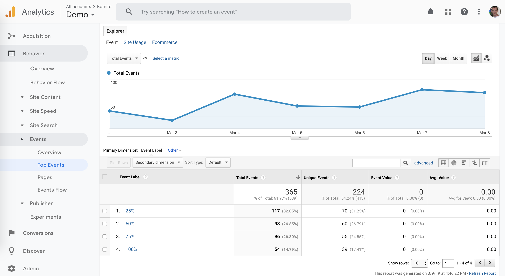

How to track scroll depth with Komito Analytics
Scroll depth is one of the key metrics that helps to learn how people engage with your content. It also opens new insights about your bounce rate and content strategy.
Komito Analytics lets you measure how deep users are scrolling. It tracks the 25%, 50%, 75%, and 100% scroll marks, sending an events to web analytics trackers found on page. Komito Analytics supports Adobe Analytics, Baidu Analytics, Clicktale, Google Analytics, Urchin, and Yandex Metrica.
What can we do if we know how deeply the users scroll the page?
• Fix bounce rate by moving up CTAs higher.
• Measure real user engagement with your content.
• Measure content readability.
Scroll depth tracking is enabled by default in Komito Analytics initial configuration.
To disable it, set the configuration property trackScroll to "0".
To view this data in Google Analytics go to "Behavior > Events > Top Events > scroll > depth": 
Integration is as simple as possible: by adding one javascript file, via Google Tag Manager or using our WordPress plugin.
The header image is available under CC0 License and is taken from Pexels free stock photos.